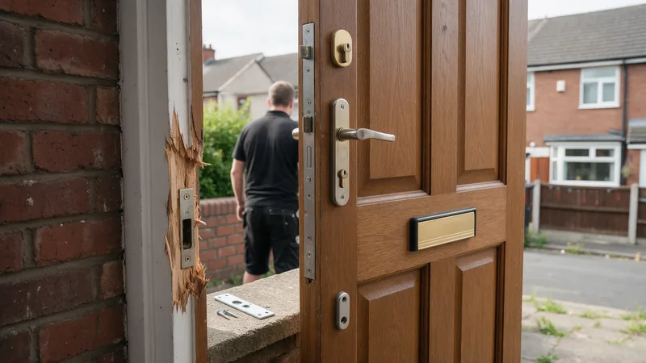
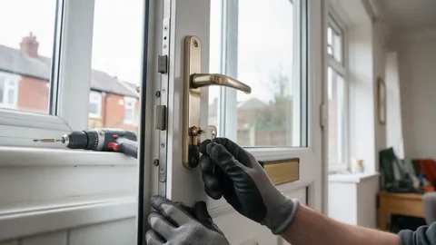

First things, in order
Ring the police. 101 to report it, 999 if you think somebody is still in the house or nearby. Get out and stay out until you are told otherwise. Then take photographs of everything before anybody touches it, because your insurer will ask for them and so will you in three weeks when you cannot remember what it looked like.
Then ring us. The first visit is about making the house secure for the night, and it is not a tidy job. If a door or a window will not shut and lock, a board over the opening is the right answer, not a repair done badly in the dark.
Where doors actually fail
Almost always at the keep, the plate screwed into the frame that the lock throws into. The lock holds, the door holds, and the soft timber around the plate lets go. That is why a repair is about the frame as much as the lock, and why a new lock screwed into the same split jamb is not a repair at all.
The proper repair
New lock or cylinder where it has been damaged. The damaged timber cut out and let in, rather than filled. A new keep with longer screws into something solid behind the frame rather than into the lining. Then the door lined up so the lock throws cleanly without being helped.
What we would not say to you
We are not going to tell you that what we fit means it cannot happen again, because nobody can say that. What a proper repair does is put the house back to where it was, or a bit better, and take away the thing that is keeping you awake, which is a door that no longer locks.

Generated photoGenerated for this demo. Not a photograph of a real job.
On the day
How this one usually goes.
- Police first, then photographsReport it, and do not tidy up or repair anything until they have been. Photograph the damage before anything gets covered.
- Make it safe for tonightBoard over what will not shut, screwed from the inside. It is meant to get you through to the morning, nothing more.
- Look at the frame, not just the lockThe split timber round the keep is the real damage on most forced doors, and the part people forget to mention.
- Repair in daylightTimber let in rather than filled, new keep with long screws into something solid, new lock or cylinder where it is needed.
- A plain note of what was doneWhat was damaged, what was replaced, what was repaired. Insurers ask, and it saves you trying to remember ${S}.
A sample running order for this demo. Yours depends on what is on the door.
Questions
Asked about this job.
Can you board up after a break in?
Yes, and it is usually the right first visit. If a door or a window will not shut and lock, you want the house secure tonight and the proper repair done in daylight.
Boarding is screwed off from inside where we can, so it is not something anybody lifts off from the street. It is not pretty and it is not meant to be permanent.
Should I ring the police or a locksmith first?
The police. 101 to report it, or 999 if you think somebody is still there or nearby. They will give you a crime number and your insurer will want it.
Do not tidy up and do not start repairing anything until they have been. Then ring us, and tell us on the phone whether the house is currently secure or not, because that decides how urgent it is.
Will my insurance pay for the repair?
Some policies cover it and some do not, and we are not going to tell you yours does. Read the wording or ring them before anything is fitted.
What we can give you is a plain note of what was damaged and what was replaced, which is normally what gets asked for. Whether they pay is between you and them.
They broke the frame, not the lock. Is that still your job?
Yes, and it is the commoner of the two. The lock usually holds and the timber round the keep gives way.
A proper repair cuts the damaged wood out and lets new timber in, then puts a new keep in with screws long enough to reach something solid. Screwing a new plate onto split timber looks fixed and is not.
General trade knowledge written for this demo, not advice on your door.
Our work
Sample jobs like this.
 Generated photoBoarded up for the nightEccles · sample
Generated photoBoarded up for the nightEccles · sample
Generated photoWindow locks downstairsSwinton · sample Generated photoHandle set and cylinder changedEccles · sample
Generated photoHandle set and cylinder changedEccles · sampleMade up samples with generated pictures. Tap one for the detail.
Also
The other things we do.
Emergency lockouts
Shut out of your own house, keys lost or snapped off in the lock. Opened without damage wherever we can, and a straight word first if we cannot.
More →Lock changes and upgrades
New cylinders, new mortice locks, new keys. The usual reasons are moving in, losing a set, or a lock that has got stiff enough to worry you.
More →uPVC door lock and mechanism repairs
The door you have to lift and lean on to lock. Usually the gearbox, the alignment or the cylinder, and all three are a repair rather than a new door.
More →Window locks
Key operated window locks, handles and the strips inside the frame. The cheapest part of a house to secure and the one most often left.
More →Safes and key cutting
Keys cut from a blank while you wait, and domestic safes fitted where they are actually worth having. Where it goes matters more than the safe.
More →Shall we come and look?
Tell us which door it is and your postcode and we will book someone in. If you are locked out right now, use the urgent line instead.